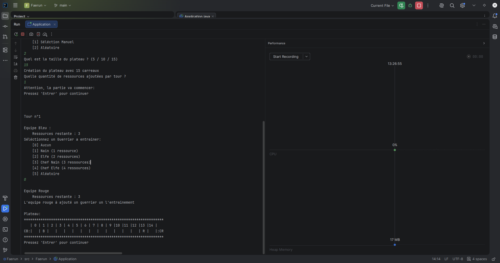

Jeu Vidéo Faërun
Projet de BUT
Fevrier - Avril 2026
Durant 3 mois, j'ai développé seul un jeu en java. Ce jeu est un simulateur de bataille appeller "Faërun" qui permet de se faire s'affronter deux equipe dans des combat tour par tour
le code
source
